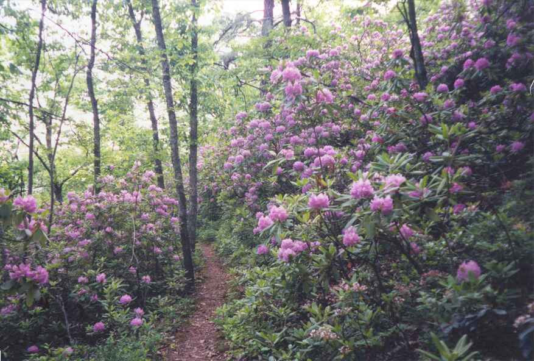

Re-supply and planning
We always tried to make a plan for the upcoming section. We would look for the next easiest and best re-supply location, looking for places which would have a grocery store or supermarket with a good selection and be reasonably close to the trail. If there was no really good place to get groceries within a reasonable number of days, we would aim further along, but look for an intermediate spot to obtain short term re-supply, such as a convenience store. On the other hand, we tried not to have a re-supply point less than 3 days away, unless it was really close to the trail.
Our calculations never seemed to work out as planned and we usually carried more food than needed. While it was not too difficult to figure the number of breakfasts and suppers needed, it was not as easy to determine the amount of food we would need to eat during the day, as it was often affected by our speed, the terrain and the amount of exertion. Our food requirements were also affected by planned and unplanned stops at restaurants, snack bars and convenience stores close to the trail, or by trail magic.
After determining our next major stop, we would then try to figure the logical shelters and campsites on the way, based on our speed. This gave us a rough itinerary for the next little while but it was only a guide. We did not want to lock ourselves in, in case we came to a beautiful place to camp or if we got delayed meeting people or by a long stop during the day at a view. Our plan could also be affected by the people hiking around us. We would sometimes slow down or speed up, in order to be with others. We could also be persuaded to make a side trip to a town for a snack or meal. We wanted to get to Maine, but we were enjoying ourselves and did not want to be locked into a schedule. Glasgow was an example of a change in plans. We originally wanted to simply buy groceries but a $9.99, 16 ounce steak and a real bed, and our fatigue had convinced us to stay the night.
*********************
Our next planned stop was Waynesboro Va, 73 miles away at Rockfish Gap, the entrance to Shenandoah National Park. It is a large town with lots of services and was a logical place to stop. We could probably make it there late in the day on the fifth day but that would be the Memorial Day holiday, so we decided not to rush and to get there early on the sixth day. We had made our food purchases with that in mind, and as usual I had bought more than we needed. MA had marked an "x" in the data book next to the places where we intended to spend the night between Glasgow and Waynesboro.
The owner of the Blue Ridge Restaurant drove us the 7 miles back to the trail, as promised, on Thursday morning May 27. He let us off on the road next to the James River. We found out later that by spending the night in Glasgow we had again missed PUFFIN. CHICKPEE and HONEYDO had told him that we had mentioned getting back to the trail after buying groceries in town and he had waited for us for a while. We never did meet him again.
As we got ready to get back on the trail, a van stopped next to us and a man asked if we needed coffee or something else for breakfast. We thanked him but told him we had a big breakfast in Glasgow. He gave us a business card which introduced Ed and Mary Ann Williams, Friends of the Trail. It gave their address and phone number and announced that they shuttle in the area. He said we would likely see them in the next day or two as they provide trail magic at some of the shelters nearby.
Back on the trail, we soon came to a stream and found FIELD AND STREAM camped near a pool. We did not know it at the time, but he carried fishing gear, and fished every chance he got. We followed the stream up a steep incline where it slid down flat rocks and collected in pools before rushing down again. The sounds of the stream accompanied us for some distance. We did some serious climbing that morning for about 5 miles and then the trail levelled off for a few miles with small changes in elevation. During the morning we had some beautiful views of the James river as evidenced by the attached picture. In the afternoon we climbed to the top of Bluff Mountain. On the summit we found a marker.
*********************
The following is extracted from SINGLEMALT's journal: (http://users.erols.com/johndsc) (http://users.erols.com/johndsc/JournalPages/week11.htm)
I have mentioned before the various monuments and markers found along the trail, but none are as touching as the small stone marker with an engraved bronze plaque found on top of Punchbowl Mountain. The marker reads:
"THIS IS THE EXACT SPOT WHERE LITTLE OTTIE CLINE POWELLS BODY WAS FOUND APRIL 5, 1891 AFTER STRAYING FROM TOWER HILL SCHOOL HOUSE NOV. 9, A DISTANCE OF 7 MILES. AGE, 4 YEARS, 11 MONTHS"
The marker is covered with anything people had to deposit there; ribbons, coins, small toys and even bullets left by hunters. Those of us who have spent much time in the woods cannot get the picture out of our minds of a small, hungry, terrified child shivering in the cold of that November night when he finally, perhaps mercifully, went to sleep never to awake. There is not a thru-hiker that I know of who didn't shed a tear at that marker. Rest in peace little Ottie; may you never know fear again.
*****************************
After a few minutes at the marker we were on our way to Punchbowl shelter which is slightly off the trail in a depression next to a large pond. This had been a 10.7 mile day. We were joined by MINNESOTA MIKE, SLUGGER, GROOVE and SMOKEY JOE (left to right in picture with JOE on ground) and then got a visit from the trail angels, the Williams. They brought hot dogs (cold), donuts and apples, then took everyone's picture. They have a booth at Trail Days every year and show off their pictures.
There were a few hours of daylight remaining, so GROOVE and SLUGGER went on. We then noticed a really bad smell around the shelter, sort of like rotten cheese. After some discreet investigation, we came to the conclusion that it came from MINNESOTA MIKE's boots and socks which he had left on the floor of the shelter.
SMOKEY JOE said that he was going to have to slow down for the next few days because he had a maildrop in Tyro, 36 miles away. He could not get there by Saturday noon so he would only be getting it on Tuesday morning. Another good reason for not having maildrops. That night we fell asleep to the sound of frogs in the pond.
The next day started off down hill, almost immediately crossing the Blue Ridge Parkway and finally coming to USFS 38. We walked up a dirt lane and noticed that there was a high dam at the end of the narrow valley that we were walking through. To our right, and a little lower than the lane, was a newly planted vegetable garden. A man on a farm tractor was hauling a wagon with hoses on it, which he was stopping and attaching to a length of hoses which stretched down from the top of the dam and along the valley towards the garden. For some reason I found this very funny.
At the base of the dam, there was a foot bridge crossing a stream, and we then climbed up steps to find ourselves at the end of the Lynchburg reservoir which supplies water to the town of Lynchburg. We walked in the lush woods above the reservoir for some time, noticing a number of signs prohibiting camping, for health reasons.
We stopped for lunch at Brown Mountain Creek Shelter and some time around then met PEREGRINE, a hiker from Germany. He was an ultra light backpacker and was doing big days. He said he was going to the store that was about a mile down US 60, about two miles further down the trail. When we crossed US 60 we met 3 young girls backpacking in the other direction. They recognized us as Canadians by the Mountain Equipment Coop logo on some of our equipment.
We stopped to rest at a table in a picnic area at the side of the highway and were joined by PEREGRINE who was already back from the store where he had eaten a bunch of junk. An older gentleman arrived in a truck and showed us his photo collection of hikers and a large book about the trail with his picture in it. He said that he usually brought treats up here for hikers but that he had not got around to it yet this year. Just our luck.
While this was going on, we were noticing a little drama going on some distance away near another picnic table. A car arrived and a middle aged couple got out and proceeded to help an older woman out of the car. This woman was extremely big and they had to hold her up as she worked her way along the side of the car, sliding her feet as she went, heading for the table. She let go of the car, very laboriously moved a foot or two, and collapsed on the ground. At this point, PEREGRINE and I went over to help.
She was the mother of the gentleman and they had taken her out of a retirement home for the day for a picnic. We did not know what to do because she was very heavy and we did not know where or how to grab her to get her up, and if we got her up, she did not have the strength to support herself. All we would have to do would be get her up high enough that she could sit in the car, however that would mean lifting her to a sitting position and turning her so that she could go backwards into the seat. We finally managed to prop her up against me and slide her over into the car and turn her around. All in a day's work for a thru hiker.
We climbed 3000 feet that afternoon to Bald Knob. Near the top we met a group of about 6 day hikers coming in the other direction. A man and a woman seemed to be in their late seventies and the rest were in their fifties and sixties. They were in the area for a week or so, hiking the trail everyday. This is an annual activity for them and they jokingly added that they would be completing the trail in about 20 years. We would see them once or twice more over the next few days.
The elevation dropped 600 feet to Cow Camp Gap from where we proceeded 0.6 miles off the trail down the Old Hotel Trail to the Cow Camp shelter. It had been a 14.4 mile day. We spent the night here alone with PEREGRINE. We found it interesting that he spoke English with a British accent. He had spent a year at school in England.
He said that he managed to get an advance of 4 months on his holidays from his job and was aiming to complete the trail in that period of time. He was travelling light and fast. The food he was carrying only supplied him with about 2000 calories per day and he was supplementing by stopping and eating at every place he could on the trail. Anything he ate at a stop, he would not have to carry. He was an extremely fit person but was concerned that he was losing too much weight and that he was actually losing muscle. At that calorie intake, it was likely and I let him read an article on nutrition in the "Two Ounce Backpacker" which we carried with us.
We had a nice time, and fought off flies together as we cooked and ate supper. I noticed that he had German food products and found it interesting that he used maildrops since he came from overseas. He said he had flown into Atlanta with all his food, and addressed and mailed his boxes at the airport when he arrived. Obviously this would be our last encounter with him.
The next day was beautiful but very hot. We started by climbing up two balds which gave us a view of the surrounding valleys. A mowing project maintains the views and the habitat for cottontail rabbits and game birds, thus ensuring survival of various raptors also. Between the balds, the trail dropped down to Hog Camp Gap and crossed USFS48 where we found a few groups of people camping in a field. Two couples stopped us and mentioned that a large group across the field had a breakfast cooking and were trying to give away food. We were not very good at yogiing and were kind of embarrassed so we declined to go over. The couples gave us some apples before we left. On the second bald, we met a few weekend campers. One couple was camped right in a spot where they could see far off in both directions. They told us of sitting last night watching the sun going down on one side of the mountain and the full moon rising on the other side. Another addition to the places to which I would like to return.
The day was characterized by lots of small elevation changes, until mid afternoon when we started the steep climb up Maintop mountain on an abandoned rocky eroded road. The footing going up was difficult on the loose rocks. We met a large number of day hikers and weekenders who were on this mountain to get a view from Spy Rock. Part way up the mountain we came to the side trail to Spy rock overview and met a couple of young men who were very excited about the view from the rock. They were trail maintainers in another section of the state. They were visibly disappointed when we said we really did not want to walk 0.2 miles to go scramble up a sheer cliff to get a view. By the way, the rock gets its name from the fact that Confederate soldiers used it to spy on Union soldiers in the valley far below.
We came to a dirt road, and met a large group of boy scouts whose weekend outing had just been cut short by an injury to one of the group. They had just come down the Priest and told us we would have a tough time climbing up there. I said nothing, but thought to myself: "Hey we are thru hikers and we have seen much worse. This will be nothing to us." This was another steep climb up an old abandoned road that wound its way up the side of the mountain. We had no problem handling it but the going was slow because of the heat and because it was near the end of a long day, not to mention the weight of our packs.
We finally arrived at the shelter, after a 16.8 mile day. Total mileage 803. We met CHICKPEE and HONEYDO, who had already set up their tent some distance in front of the shelter. I should mention now that they were leaving the trail in three days for a two week period as they were going home to Michigan to get married. His parents were picking them up in Waynesboro on Tuesday. There have been a number of light-hearted comments in the registers, including some digs from RHUBARB, some artwork from JILEBI and drawings of a wedding cake and the bride and groom by SONGBIRD and GRUFF. They really appreciated the teasing.
While making supper, the strap on CHICKPEE's hat got caught on the handle of his pan and he spilled boiling water on himself when he raised his head. He was protected by his clothes but he burned his hand which turned red and blistered the next day. It is difficult to keep sores clean in this environment, but he covered the wound in antibiotic cream. He had a problem keeping a bandage on it because it does not adhere well to sweaty skin. Duct tape sometimes helps keep it in place.
We had a few visitors that evening. A section hiker named TRAVELLER stopped by to get water. He was upset that there was another person with the same name as him on the trail (the German man making a video whom we met in Pearisburg). He was an ultra light backpacker doing a 2 week southbound hike. He had been doing this for a number of years with a view of eventually completing the entire trail. He was an African-American, and one of only two black men we met on the trail. After it got dark and we were snuggled in our bags, someone came around the corner of the shelter, shouted "Hello" and shone a light in on us, scaring the hell out of us. He was looking for two friends who had come camping up here on the Priest somewhere. He left to go find them. A few deer came into the clearing in front of the shelter after dark. We could not make them out very clearly except for their eyes which shone when I aimed my flashlight in their direction. A family with an 8 year old boy came noisily into the clearing, set up their tent and then talked loudly and made noise till around midnight. An obvious sign of a long weekend.
We left early the next morning, first hiking the half mile to the summit of The Priest. The path was lined with light green grass, rock boulders placed in strategic locations and pink azaleas in full bloom. We met the man who barged in on us last night. He had met his friends, and was now going home. Strangely he was not wearing camping attire, and seemed to have a dress shirt. Just passed the summit we heard his friends laughing in the bushes away from the trail.
The descent was pretty difficult, 3100 feet in just over 4 miles (from 4100 down to 1000). This was another occasion where we were glad for our hiking poles. They helped with our balance on the big drops and softened the pounding that our knees would normally take. The upper section of trail often came out into the open, giving us views of the patchwork farm land in the valley below. The lower section of the trail was in a more forested area, with little sunlight. We met a man and his young son climbing up with large packs and they seemed unconcerned about the climb ahead of them.
At the base of the Priest we crossed VA 56 and then walked across a suspension footbridge high over the Tye river. We were a day early for trail magic from FANNY PACK who set up a BBQ and served hot dogs and hamburgers to thru hikers.
After the river, the trail started climbing again. Part way up the mountain we came to Harpers Creek shelter where we spent a few hours relaxing and talking to CHICKPEE and HONEYDO, (who both took a break and siesta of over 5 hours) and GROOVE. The latter explained that he did not put his clothes and other items in plastic bags to protect them from the elements. Instead, he placed a veterinary bag inside his backpack and this was large enough to fit everything in. Every few weeks, he would get a new bag in his maildrop.
We hung around this shelter for quite a while because it was next to a stream in a shaded area and was an oasis from the heat. We were also dreading the steep climb up the Three Ridges. The profile map looked really bad. Even though we had been hiking for over two and a half months, the thought of a steep climb still depressed me. Of course it was mostly mental because we were now in great shape.
In the early days, climbing was very hard on us. There was the pain in my back and shoulders from the pack, the sore muscles in my legs, the tightness in my chest, the shortness of breath, the pounding of my pulse in my ears as well as the pain in my stomach from leaning forward and from my hip belt. Climbing was still very strenuous and tiring, but it was because we climbed faster now and took very few breaks on the way up. Now when we came to a steep climb I simply put my head down and before I knew it, we were on level ground.
That is exactly what happened at Three Ridges. The 2000 foot climb had a couple of steep ascents and after about 90 minutes or so we came upon a couple of day hikers leaning against a rock reading. We asked where the summit was and were told we had arrived. I was really surprised. We went through some bushes and sat on a rock outcropping overlooking a valley to have a snack.
We then continued on to Maupin Field shelter, the end of a tough, hot, 13.6 mile day. We set up in the shelter which is situated in a clearing a short distance from the AT, while the other thru hikers here camped in grassy spots next to the AT or in a couple of spots on the trail to the shelter. CHICKPEE and HONEYDO came to the table in front of the shelter to prepare their supper.
We were then surprised to see MO and her dog MAGGIE and another thru hiker coming out of the woods behind the shelter. We had last seen MO at Hawk Mountain Shelter on March 14, our first night on the trail when she was hiking with her dog and her boyfriend. As I said in chapter 2, she kept the dog but ditched the boyfriend. Instead of coming up to the shelter via the AT over Three Ridges, she had taken the Mau-Har blue blaze trail which was shorter but steeper than the AT. It is apparently very beautiful as it comes up the mountain along a stream, with many waterfalls and swimming pools, but it is also very tricky as the rocks along the stream are slick from the spray.
Camped along the side trail to the shelter was an older couple who were just out for a few days and were going home sooner than expected. They came over to talk to us for awhile and he said he was an ex-military officer. He offered us some military rations called MRE's (Meals Ready to Eat). These meals are not dry so they are more heavy but we never refuse gifts of food so we accepted them.
Over in the woods to the left of the shelter were a number of young guys with dogs (malamutes, I believe) who tried to get them to howl when it got dark and again early in the morning. Kind of obnoxious I guess but, as CHICKPEE said, we have the last laugh because they have to go back to work when the weekend is over.
The next morning we were back on the trail. At this point, however, many thru hikers head for Rusty's Hard Time Hollow situated a few miles from the trail on the Blue Ridge Parkway. We did not stop at Rusty's but I have included a segment at the end that I am sure you will enjoy.
On this day, we came close to the Parkway on a number of occasions, crossing it at least twice. During the morning, the trail stayed close to the Parkway just below the ridgeline, wandering on the side of the hill, in lush vegetation, including long stretches walking in corridors of rhododendrons and mountain laurel. I kept waiting for a perfect place to take a picture of these areas, but never got around to it. I see that SINGLEMALT has two beautiful pictures of these corridors of flowereing trees on his website and I am including them here.. The first picture is the rhododendrons and the second picture is the mountain laurel.

Late in the morning, the trail came to cliffs jutting out over a valley and then turned and headed up the ridgeline to the Parkway. Not far from the Parkway we found two coolers from FANNY PACK. The first one contained thick peanut butter and jelly sandwiches, bananas and other treats. The second one contained his Simply brand pop and cans of beer. The beer were likely added by someone else. We snacked and had some pop, but no beer because it was still morning. We put our garbage in a plastic bag that was hung on a tree next to the coolers. POTS said he came by before us and had two beers, because you cannot refuse free beer.
Late in the afternoon we came into major tourist territory: Humpback Rock on Memorial Day. We descended from the summit of Humpback Mountain on a grassy path which turned into a steep narrow rocky trail that made its way down from one level to the next on crude high steps made by placing rocks in strategic locations. We came to a side trail leading to an overlook called Humpback Rock and saw a number of people over in that area. They had climbed up from the Parkway parking lot down below.
We continued to descend the rocky trail, meeting a few people coming up as we went. Eventually we came to a wide asphalt-like path that continued on down, getting steeper and steeper. We began to meet more people including some families with small children and some older people. The trail came out of the woods into a clearing and we ended up next to a parking lot, across the road from a visitor's center. We sat on the grass at the edge of the parking lot and watched the comings and goings and the families picnicking in the grassy center of the lot. HONEYDO and CHICKPEE showed up and we all tried to look like starved hikers. We were not successful so we left and walked downhill another 2 miles to Paul C. Wolfe shelter. We had walked 13.2 miles and had 4.9 miles remaining to the road to Waynesboro.
The shelter was situated above a shallow stream at the bottom of a heavily wooded ravine. I walked some distance down the stream, because we had heard there was a swimming hole but no luck. We would spend a quiet night here with HONEYDO and CHICKPEE (who had again set up their tent in the shelter) and POTS, a friendly man in his late forties from Monkton Vermont. He got his name one day when he stacked the pots in his cookset to cook a number of items at the same time. Most people only had one pot which they also used to eat out of. A few hikers came by and said hello including FIELD AND STREAM who showed up after dark and was continuing on to town using a head lamp.
The next morning we offered best wishes to HONEYDO and CHICKPEE on their upcoming wedding. We figured their two week absence from the trail would mean we would not see them again and we were correct. A very nice young couple and we know they will do well in life. They completed the trail, summitting Katahdin on October 5 in class IV conditions. And, now a quote from CHICKPEE's journal on the day he got home for the wedding: ( http://home.nyu.edu/~kmc235/)
***"That first night home I was on the computer. I checked the Website (it looked great!) and then checked out Pa's favorite Internet spot: www.zone.com. I was up all night playing spades and backgammon with random people around the world." *** I guess maybe I was a bad influence on him.
It was an easy walk that morning, and we talked a little with POTS who said he would be staying at the Exxon Cabin Court Motel in town which was only $24. The price was good so we were also considering going there. We met CHICKPEE's parents who were coming down the trail to meet them, and then came upon a cooler of pop that they had left at the end of the trail.
The trail came out at the spot where the Blue Ridge Parkway became the Skyline Drive and entered Shenandoah National Park. We crossed with POTS to a tourist information office to see about getting a shuttle to town which was at least 5 miles away. We had no luck so we went to the road and split up to hitch. MA and I soon got a ride with a lady who dropped us off at the local outfitter where we got a replacement cartridge for the water filter and a new Platypus bag for MA.
The manager drove us the rest of the way into town and recommended we not stay at the Exxon Cabins. He dropped us off at the Comfort Inn where we would stay two nights. (We talked to POTS when we got back on the trail and were pleased we did not stay with him. The Exxon Cabins was a noisy place situated behind a service station.)
While in town we would walk a few blocks to a laundromat and re-supply at grocery stores and dollar stores. There was a $0.99 special on half gallon ice cream which we took advantage of. We would also pig out with pizza, a great Chinese buffet and at a downtown restaurant that had a small buffet which included chitlin (a first for us). At the latter we met MINNESOTA MIKE and NOT SO ZIPPY, a surgeon from Ohio who was getting off the trail. We did not make it to Weazy's a restaurant, famous for their $2.50 AYCE pancake breakfast. The record for the plate sized pancakes is 22 by an Australian hiker.
On both days, we walked more than 10 blocks in a residential neighbourhood to the library to check our email and our on-line pictures. We went on to the YMCA to say hello to some people who were camping out in a grassy field behind the building. We met FREE SPIRIT, SPUD, FENRIR and FLEISHMAN here. Hikers who camp here are also allowed to use the YMCA facilities. On the way back we met MO and MAGGIE heading for the YMCA.
The motel had a pool out front which we used. On the second day, PILGRIM and PADDLER came down to the pool to chat. We had started on the same day as PILGRIM but had not seen him since Hot Springs on April 14 when he was still with GREYLOX. He had been hiking lately with PADDLER who started the day after us but whom we had never met before. We had seen his entries in the registers, where he always drew a stick man holding a paddle to symbolise his obsession with canoes. To his dismay, the drawings lead some people to confuse him with WYOMING SKATEBOARDER who hiked with a kayak paddle. We would not see PADDLER again until July 2 when we would end up hiking with him for a long period. We would never see PILGRIM again.
The town is large and we walked everywhere. We walked in our sandals to give our feet a rest but walking long distances in sandals can be tiring. We spent our evenings vegetating in front of the TV and called our family and some friends back home to check up on our cat. Both mornings we had the free breakfasts provided by the motel. On the second morning we met BRISTLECONE, who was just arriving in town, and we then took a taxi back to the trail.
************************
In our next segment we hike through Shenandoah National Park with some old and new friends.
*************************
From SINGLEMALT's journal (http://users.erols.com/johndsc )
I arrived today at the famous Rusty's Hard Time Hollow, a hostel of sorts which has to be seen to be believed. There's a bunkhouse and a building for common use with kitchen and lounge area. There's a red fire hydrant in the yard for use as a men's urinal, and signs of all descriptions hanging everywhere. Sodas are available from the spring house, (close the door afterwards so the chickens can't get in) and you take your empty can and place it on a 3 ft. high post then hit it as far as you can with a whiffle bat into the driveway where Rusty's truck will eventually flatten them out so they can be recycled. There is no electricity on the property, and gas mantel lights provide illumination. Any attempt to accurately describe this place would be futile it has to be seen. There are benefits to this place. The Blue Ridge Parkway runs right around the top of the hollow, and there is no other development or houses around. At night there is a bonfire burning at the bottom of the hill, and the best part; a wood-fired hot tub with a cold spring next to it. Out of the tub and into the spring, weeee! The moon provided outdoor illumination, and it's so nice to see the trees silhouetted against the night sky with no electric lights anywhere around. This must be what it looked like to the original homesteaders. It is believed that a very large Indian community thrived here, and Rusty has plowed or dug up many arrowheads and other artifacts. The oldest so far have been dated to 1,700 years old.
----------------------
From JILEBI's journal (http://trailplace.com/c99journals/315james/315james_index.html
***How can I begin to explain Rusty's? You are greeted by slightly humorous but firm signs that inform one on the position that Rusty has on alcohol, drugs and the use of electronic equipment on his property - all of which are not allowed. One is greeted by a hodge podge mix of tin roofed shed like buildings plastered with more signs and a gravel yard strewn with soda cans. Just as you begin to wonder what you have walked into, Rusty came out and greeted us warmly . He took a Polaroid picture of us and then we followed him to the springhouse and watched our faces stapled to the roof - picture panel dedicated for the 1999 hikers. There are pictures of hikers on these walls since 1986. Rusty said that once one has visited him as a through hiker his place was open to them forever. We were free to wander around the 17 acres of his property. There was Punkin his dog, chickens, guinea hens, and a few goats with bells around their necks. Rusty has lived primitively since he was 16. I think he is about 60 now, He is solely supported by donations and gives everything back to his guests. He made a huge skillet of sloppy joes for dinner and showed me the bread cabinet and large jars of peanut butter and jelly when I indicated my veggie leaning. When evening fell, the oil lamps were lit and we sat in the porch listening to his stories of his parents and himself. The wip-poor-wills started their infinite call somewhere in the hollow. The hot tub was fired up and a large campfire was lit by the vegetable garden. I sat in the back porch overlooking these flames and chatted with Timothy Mouse whose concern for Rusty dates back about five years. Timothy had done his first VA section hike when he was 14. The days hike caught up with me and I went to sleep in the barn.
Rusty was making blueberry pancakes when we woke up. Actually I did not sleep well at all and I think there were fleas crawling over me. Then the rooster started to call and I understood the need for his sign "leave my chickens alone".
--------------------------
The Thru hikers Companion (http://www.aldha.org/companyn.htm) provides the following additional information about Rusty's.
-----------
During our hike, we heard that WOODPACKER stayed 10 days at Rusty's and WOODY fell off a hammock and injured herself while there and remained for 2 weeks.